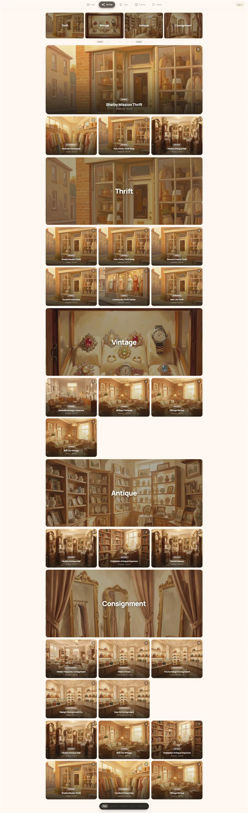

Featured projects

Koji Studio — 12 days to launch

Full rebuild
Brand Refresh
Complete redesign and platform migration with zero SEO loss. New look, same rankings, faster site.

47% bounce drop
Gameshelf Redesign
Mobile-first rebuild that cut bounce rate nearly in half. Users stay longer and convert faster.